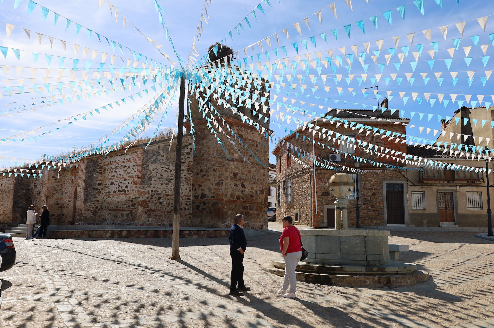
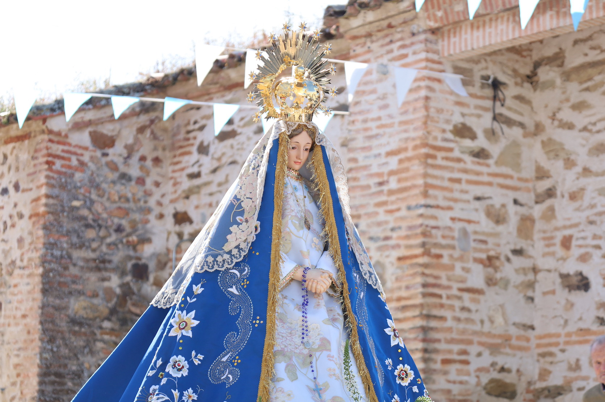
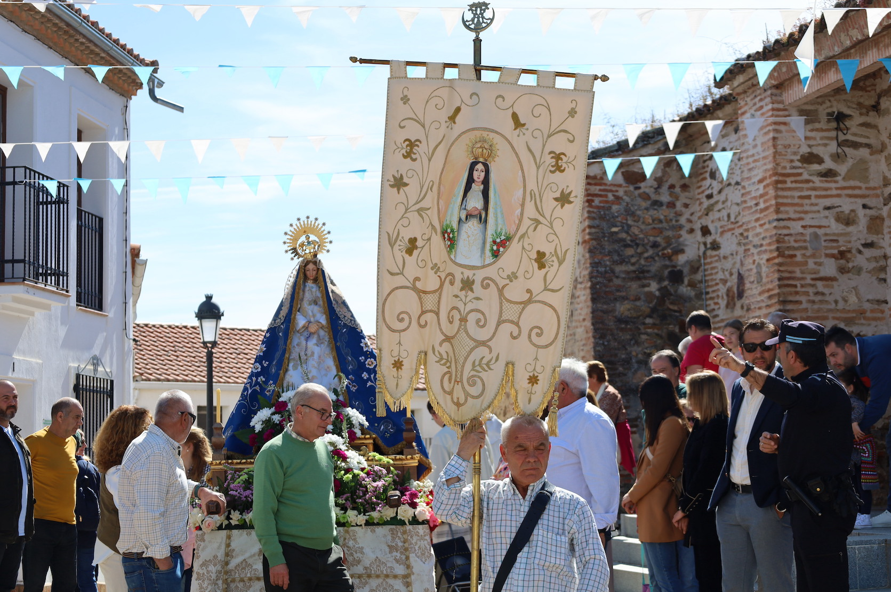
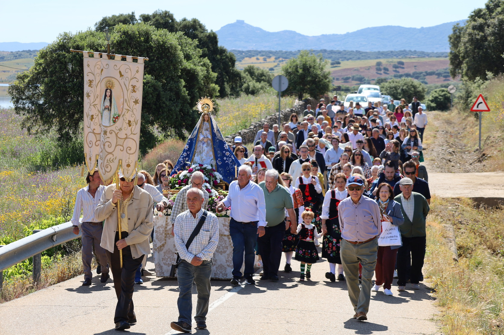
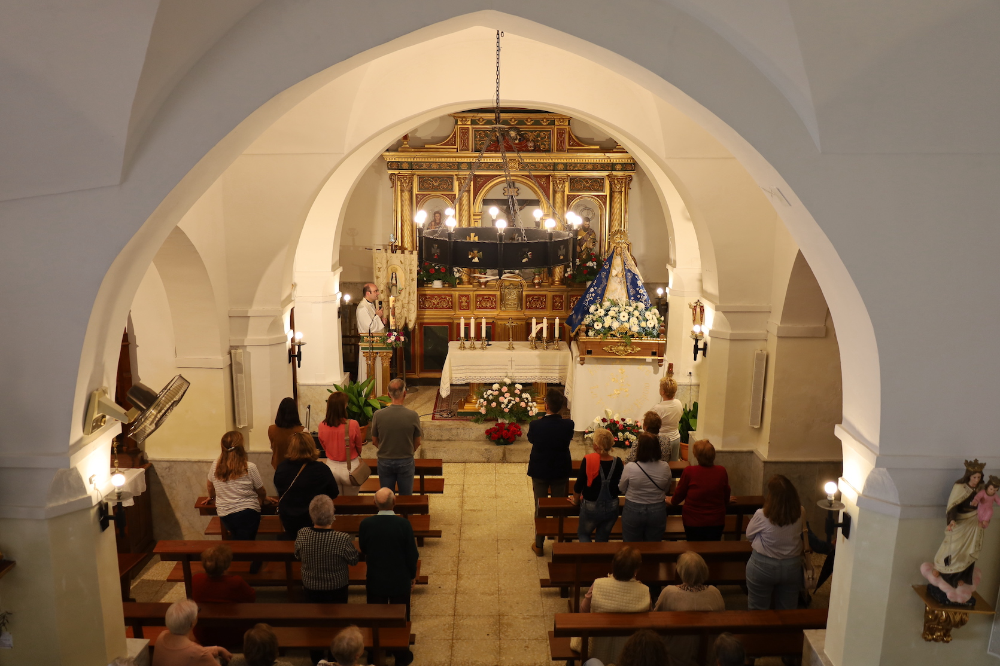

Ermita de la Virgen del Espino
Un santuario de paz situado en un entorno privilegiado con vistas panorámicas.
La Ermita de la Virgen del Espino es uno de los lugares de mayor recogimiento y belleza paisajística de Herrera del Duque. Situada en un enclave elevado, este pequeño santuario no es solo un centro de devoción religiosa, sino también un mirador excepcional desde el que se puede contemplar la inmensidad de la Reserva de la Biosfera de La Siberia.
---
Un refugio espiritual
La ermita está dedicada a la Virgen del Espino, una advocación muy querida por los herreños. A diferencia de otros templos más grandes, la ermita destaca por su sencillez y la calma que se respira en su entorno. Es un lugar donde el silencio solo se ve interrumpido por el sonido del viento y la naturaleza que la rodea.Arquitectura y sencillez
El edificio sigue las pautas de la arquitectura religiosa popular de la zona, con muros encalados que contrastan con el verde de la sierra y el azul del cielo. Su estructura es funcional y sobria, reflejando una espiritualidad directa y ligada a la tierra.Un mirador sobre La Siberia
Su ubicación estratégica la convierte en uno de los mejores puntos de observación del municipio. Desde los alrededores de la ermita, los visitantes pueden disfrutar de:Es, sin duda, un lugar predilecto para los amantes de la fotografía y para aquellos que buscan un momento de reflexión mientras contemplan el atardecer sobre el horizonte extremeño.
Tradición y comunidad
Como ocurre con muchos santuarios locales, la Ermita de la Virgen del Espino cobra una vida especial durante las festividades y romerías. Es el destino de paseos habituales para los vecinos, que acuden a visitar a la Virgen y a disfrutar del aire puro de la sierra.Visitar la Ermita del Espino es conectar con la esencia más pausada de Herrera del Duque, uniendo el patrimonio cultural con un entorno natural de valor incalculable.
Galería de fotos





